Table of Contents
2. Introduction to Equations, Inequalities, and Graphing
2.1. Variables and Expressions
2.1.1. Introduction to Variables
2.1.2. Adding and Subtracting Algebraic Expressions
2.1.3. Multiplying Algebraic Expressions
2.1.4. Simplifying Radical Expressions
2.1.5. Simplifying Exponential Expressions
2.1.6. Rational Algebraic Expressions
2.2. Introduction to Equations
2.2.1. What is an Equation?
2.2.2. Solving Equations: Addition and Multiplication Properties of Equality
2.2.3. Rational Equations
2.2.4. Radical Equations
2.2.5. Equations with Absolute Value
2.3. Inequalities
2.3.1. Introduction to Inequalities
2.3.2. Rules for Solving Inequalities
2.3.3. Compound Inequalities
2.3.4. Inequalities with Absolute Value
2.4. Graphing and Equations of Two Variables
2.4.1. The Cartesian System
2.4.2. Equations in Two Variables
2.4.3. Graphing Equations
2.4.4. Graphs of Equations as Graphs of Solutions
2.4.5. Graphing Inequalities
2. Introduction to Equations, Inequalities, and Graphing
2.1. Variables and Expressions
2.1.1. Introduction to Variables
Variables are used in mathematics to denote arbitrary or unknown numbers.
Learning Objective
Describe the uses of variables in mathematics
Key Points
- Variables are generally alphabetic characters that represent numbers and are useful in mathematics for several purposes.
- Parameters of equations are often denoted with variables (such as $a$ , $b$ , or $c$ ) and are part of the given information in an equation.
- Unknown variables are those that must be solved for in equations and are often denoted with variables such as $x$ and $y$ .
Key Terms
- variable
- An alphabetic character representing a number that is arbitrary or unknown.
- term
- A value or expression separated from other such values by an operation.
- parameter
- A number or variable in an equation that is considered "known".
- coefficient
- A quantity (usually a number) that remains the same in value within a problem.
- unknown
- A variable in an equation that has to be solved for.
In elementary mathematics, a variable is an alphabetic character representing a number, called the value of the variable, that is arbitrary, not fully specified, or unknown.
Variables are useful for several reasons.
Unknown Values
Variables can represent numbers whose values are not yet known. For example, if the temperature of the current day, $C$ , is 20 degrees higher than the temperature of the previous day, $P$ , then the problem can be described algebraically as $\displaystyle C=P+20$ .
General Formulas
Varying Quantities
Variables may describe mathematical relationships between quantities that vary. For example, the relationship between the circumference, $C$ , and diameter, $d$ , of a circle is described by $\displaystyle \pi =C/d$ .
Variables may also describe general problems without specifying the values of the quantities involved. For example, it can be stated specifically that 5 minutes is equivalent to $\displaystyle 60\times 5=300$ seconds. A more general (algebraic) description may state the number of seconds as $\displaystyle s=60\times m$ , where $m$ is the number of minutes.
Mathematical Properties
Variables may describe some mathematical properties. For example, a basic property of addition is commutativity, which states that the order of numbers being added together does not matter. Commutativity is stated algebraically as $\displaystyle (a+b)=(b+a)$ .
Types of Variables
Variables can be used to represent different types of numbers. It is common that many variables appear in the same mathematical formula, and they may play different roles. Some names or qualifiers have been introduced to distinguish them.
For example, in the general cubic equation $\displaystyle ax^{3}+bx^{2}+cx+d=0$ , there are five variables. Four of them ($a$ , $b$ , $c$ , $d$ ) represent given numbers, which are referred to as the parameters of the equation. The last one, $x$ , represents the solution of the equation, which is unknown and must be solved for. To distinguish among the different variables, $x$ is called an unknown, and the variables that are multiplied by $x$ are called coefficients. In this equation, the coefficients are $a$ , $b$ , and $c$ . A number on its own (without an unknown variable) is called a constant; in this case, $d$ represents a constant.
Note that a term of an equation is any value (variable or number) or expression that is separated from another term by a space or a character (such as "$+$ "). Therefore, a term may simply be a constant or a variable, or it may include both a coefficient and an unknown variable. In the cubic equation described above, there are four terms: $ax^3$ , $bx^2$ , $cx$ , and $d$ .
Note that unknown variables are often denoted by $x$ , $y$ , or $z$ and the parameters of equations by $a$ , $b$ , $c$ , or $d$ . However, this is not always the case. For example, you might be asked to solve the following equation for $b$ :
$12 - b = 3$
In this case, $b$ is an unknown variable, not a parameter of the equation. We can solve this problem and find that $b = 9$ .
2.1.2. Adding and Subtracting Algebraic Expressions
Simplifying algebraic expressions involves combining like terms, often through addition and subtraction.
Learning Objective
Use the concept of like terms to add and subtract expressions containing variables
Key Points
- "Like terms" are terms in algebraic expressions that are constants or that involve the same variables raised to the same exponents (e.g., $6x^2$ and $x^2$ ; $14y$ and $3y$ ).
- In algebraic expressions, like terms can be combined through addition and subtraction: $2{x}^{2}+3ab-{x}^{2}+ab={x}^{2}+4ab$ .
Key Term
- like terms
- Entities that involve the same variables raised to the same exponents.
Like Terms
Every algebraic expression is made up of one or more terms. Terms in these expressions are separated by the operators $+$ or $-$ . For instance, in the expression $x + 5$ , there are two terms; in the expression $2x^2$ , there is only one term.
Terms are called like terms if they involve the same variables and exponents. All constants are also like terms.
For example, $5x^2$ and $x^2$ are like terms because they involve the same variable, $x$ , raised to the same exponent, 2. Likewise, the following are examples of like terms:
- $3x$ and $25x$
- $y^4$ and $12y^4$
- 13 and 42
Note that terms that share a variable but not an exponent are not like terms. Therefore, $2x^3$ and $2x^2$ are not like terms because they have different exponents (3 and 2). Likewise, terms that share an exponent but have different variables are not like terms. Therefore, $2x^2$ and $2y^2$ are not like terms, because they have different variables ($x$ and $y$ ).
Combining Like Terms
Expressions with Two Terms
We can simplify an algebraic expression by combining like terms. For example, let's try simplifying $3x + 6x$ .
First, let's write both terms as addition problems:
- $6x = x + x + x + x + x + x$ .
Adding these terms together, we have:
If you count, you'll find that there are 9 $x$ s in this expanded expression. Therefore:
Note that the expression we started with, $3x + 6x$ , had only two terms. When an expression contains more than two terms, it may be helpful to rearrange the terms so that like terms are together.
Expressions with More than Two Terms
The commutative property of addition says that we can change the order of terms without changing the meaning of the expression (the sum). So, we can rearrange the order of the following expression before attempting to combine like terms:
We can identify that $4a$ and $2a$ are like terms, as are $6b$ and $b$ . We want to rearrange the expression to group like terms together:
$4a + 2a + 6b +b$ .
Now we can more easily add the like terms together to simplify the expression:
The same rules apply when an expression involves subtraction. However, be careful that when you changing the order of terms you ensure that the minus sign follows the term that it applies to. For example, consider $2x - 3 + 5x$ . This expression is properly rearranged and simplified as follows:
$2x-3 + 5x = 2x + 5x - 3 = 7x - 3$ .
Summary
In summary, there are three steps to combining like terms:
1. Identify all like terms.
2. Rearrange the expression so the like terms are grouped together.
3. Add or subtract the coefficients of the like terms until there are as few of each kind of term as possible.
Example 1
Simplify the following expression:
$4x^2 + 3xy - y - 2x^2 + 5xy$
First, identify the like terms: $4x^2$ and $-2x^2$ , $3xy$ and $5xy$ . Now group these like terms together:
Add and subtract the coefficients of the like terms:
Example 2
Simplify the following expression:
First, identify the like terms: $-5x^2$ and $21x^2$ , $3x$ and $-3x$ . Now group these like terms together:
$-5x^2 + 21x^2 + 3x - 3x + 3y $
Add and subtract the coefficients of the like terms. Notice that the terms $3x$ and $-3x$ cancel, because $3x - 3x = 0$ . The expression therefore simplifies to:
2.1.3. Multiplying Algebraic Expressions
The process for multiplying algebraic expressions differs for monomials and polynomials.
Learning Objective
Calculate the product of expressions containing variables
Key Points
- To multiply two monomials, multiply the integer coefficients together and add the exponents of any variables that are the same.
- To multiply a monomial by a polynomial, multiply the monomial by each individual term in the polynomial.
- To multiply two binomials, follow the FOIL method: multiply the First, Outside, Inside, and Last terms before adding all the resulting terms together.
Key Terms
- binomial
- A polynomial with two terms.
- polynomial
- An algebraic expression with more than one term.
- monomial
- A single term consisting of a product of numbers and variables.
- trinomial
- A polynomial with three terms.
Multiplication of Two Monomials
A monomial is a single term consisting of a product of numbers and variables. It is a relative of the polynomial, which is an algebraic expression with more than one term. The following are examples of monomials:
(Note that multiplying monomials is not the same as adding algebraic expressions—monomials do not have to involve "like terms" in order to be combined together through multiplication.)
When you multiply monomials, you multiply their integer coefficients together and, if they contain any of the same variables, add the exponents on those variables together.
For example:
Multiplication of Monomials and Polynomials
A monomial can be multiplied by a polynomial of any size (note that a polynomial is called a binomial if it has two terms and a trinomial if it has three terms). The monomial should be multiplied by each term in the polynomial separately. Any negative sign on a term should be included in the multiplication of that term. The resulting polynomial will have the same number of terms as the polynomial in the problem.
For example:
Multiplication of Two Binomials
Multiplying two binomials is less straightforward; however, there is a method that makes the process fairly convenient. "FOIL" is a mnemonic for the standard method of multiplying two binomials (hence the method is often referred to as the FOIL method). The word FOIL is an acronym for the four terms of the product:
- First (the "first" terms of each binomial are multiplied together)
- Outer (the "outside" terms are multiplied—i.e., the first term of the first binomial with the second term of the second)
- Inner (the "inside" terms are multiplied—i.e., the second term of the first binomial with the first term of the second)
- Last (the "last" terms of each binomial are multiplied together)
Once this process is complete, all the resulting terms are added together into a single polynomial.
The FOIL method can be written algebraically:
- First terms: $ac$
- Outside terms: $ad$
- Inside terms: $bc$
- Last terms: $bd$
Remember that any negative sign on a term in a binomial should also be included in the multiplication of that term. Additionally, remember to simplify the resulting polynomial if possible by combining like terms.
Example of Multiplying Binomials
Multiply the following binomials:
Following the FOIL method, multiply the first, outside, inside, and last terms:
Now add all of these terms together:
Notice that two of these terms are like terms ($-4x$ and $3x$ ) and can therefore be added together to simplify the expression further:
2.1.4. Simplifying Radical Expressions
A radical expression that contains variables can often be simplified to a more basic expression, much as can expressions involving only integers.
Learning Objective
Simplify radical expressions containing variables
Key Points
- If a radical is fully simplified, there is no factor of the radicand that can be written as a power greater than or equal to the index, there are no fractions under the radical sign, and there are no radicals in the denominator.
- When radical expressions contain variables, simplifying them follows the same process as it does for expressions containing only integers.
- Similarly, the rules for multiplying and dividing radical expressions still apply when the expressions contain variables.
Key Term
- radicand
- The number or expression whose square root or other root is being considered; e.g., the 3 in
$\sqrt[n]{3}$ . More simply, the number under the root symbol.
Radical Expressions
Expressions that include roots are known as radical expressions. Recall that the $n$ th root of a number $x$ is a number $r$ that, when raised to the power of $n$ , equals $x$ :
where $n$ is the degree of the root. A root of degree 2 is called a square root; a root of degree 3 is called a cube root. Roots of higher degrees are referred to using ordinal numbers (e.g., fourth root, twentieth root, etc.).
Simplified Form
A radical expression is said to be in simplified form if:
- there is no factor of the radicand that can be written as a power greater than or equal to the index,
- there are no fractions under the radical sign, and
- there are no radicals in the denominator.
Example
For example, let's write the radical expression $\sqrt { \frac { 32 }{ 5 } }$ in simplified form, we can proceed as follows. First, look for a perfect square under the square root sign, and remove it:
Next, separate the fraction under the radical sign:
Finally, remove the radical from the denominator:
Radical Expressions with Variables
For the purposes of simplification, radical expressions containing variables are treated no differently from expressions containing integers. For example, consider the following: $$
This follows the same logic that we used above, when simplifying the radical expression with integers:
Example
Simplify the following expression:
First, notice that there is a perfect square under the square root symbol, and pull that out:
Recall that we can rewrite the numerator and denominator in rational exponent form, which will allow us to proceed with the division rule:
Notice that the exponent in the denominator can be simplified, so we have:
Recall the rule for dividing numbers with exponents, in which the exponents are subtracted. Applying the division rule yields:
2.1.5. Simplifying Exponential Expressions
The rules for operating on numbers with exponents can be applied to variables with exponents as well.
Learning Objective
Simplify exponential expressions containing variables
Key Point
- The rules for operating on exponential expressions are the same for expressions with variables as they are for those with only integers.
Rules for Exponential Expressions
Recall the rules for operating on numbers with exponents, which are used when simplifying and solving problems in mathematics:
- Multiplying exponential expressions with the same base: $a^m \cdot a^n = a^{m+n}$
- Dividing exponential expressions with the same base: $\displaystyle \frac{{a}^{m}}{{a}^{n}}={a}^{m-n}$
- Raising an exponential expression to an exponent: ${({a}^{n})}^{m}={a}^{n \cdot m}$
- Raising a product to an exponent: ${(ab)}^{n}={a}^{n}{b}^{n}$
Previously, we have applied these rules only to expressions involving integers. However, they also apply to expressions involving a combination of both integers and variables. This makes them more broadly applicable in solving mathematics problems.
Exponential Expressions with Variables
In terms of conducting operations, exponential expressions that contain variables are treated just as though they are composed of integers. For example, consider the rule for multiplying two numbers with exponents. We know that $(2 \cdot 5)^2 = 2^2 \cdot 5^2 $ . The same rule applies to expressions with variables. The following statements therefore hold true:
Each of the other rules for operating on numbers applies to expressions with variables as well. You will see how each of these applies in the following examples.
Example 1
Simplify the following expression:
Now apply the rule for dividing exponential expressions with the same base:
Example 2
Simplify the following expression:
To simplify the first part of the expression, apply the rule for multiplying two exponential expressions with the same base:
To simplify the second part of the expression, apply the rule for multiplying numbers with exponents:
Now, since we know that $2^3 = 2 \cdot 2 \cdot 2 = 8$ , we can plug that in. We can also apply the rule for raising a power to another exponent:
Combining the two terms, our original expression simplifies to:
2.1.6. Rational Algebraic Expressions
The addition and subtraction of rational expressions are bound by all of the same rules as the addition and subtraction of fractions.
Learning Objective
Manipulate rational expressions that contain variables
Key Points
- Always factor rational expressions before doing anything else.
- When two rational expressions are added to or subtracted from each other, each must first be multiplied by some constant such that both expressions have the same denominator.
- Once two rational expressions have the same denominator, their numerators can be combined. Then the overall remaining expression can be simplified.
Key Terms
- rational expression
- An expression in terms of the quotient of two polynomials.
- prime factor
- A factor of a given integer that is also a prime number.
- factor
- Any of various objects multiplied together to form some whole.
- factoring
- The process of creating a list of items that, when multiplied together, will produce a desired quantity or expression.
Adding and subtracting fractions should be a familiar process, and we will rely on this concept in our discussion of adding and subtracting rational expressions.
The key is finding the least common denominator of the two rational expressions: the smallest multiple of both denominators. Then, you rewrite the two fractions using this denominator. Finally, you add (or subtract) the fractions by combining the numerators and leaving the denominator alone.
But how do you find the least common denominator?
Consider this problem:
You could probably find the least common denominator if you played around with the numbers long enough. Here, we will show you a systematic method for finding least common denominators—a method that works with rational expressions just as well as it does with numbers.
Finding the Least Common Denominator
We start, as usual, by factoring. For each of the denominators, we find all the prime factors—i.e., the prime numbers that multiply to give that number.
If you are not familiar with the concept of prime factors, it may take a few minutes to get used to. $2\cdot 2 \cdot 3$ is $12$ broken into its prime factors: that is, it is the list of prime numbers that when multiplied together yield 12. Similarly, the prime factors of 30 are 2, 3, and 5. But why does this help?
Because $12=2 \cdot 2 \cdot 3$ , any number whose prime factors include two 2s and one 3 will be a multiple of 12. Similarly, any number whose prime factors include a 2, a 3, and a 5 will be a multiple of 30.
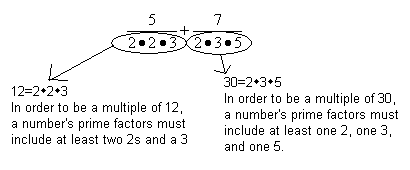{kind=link}
Finding the prime factors of the denominators of two fractions enables us to find a common denominator.
The least common denominator is the smallest number that contains the overlap of both factored denominators: in this case, it must have two 2s, one 3, and one 5. Hence, the least common denominator must be $2 \cdot 2 \cdot 3 \cdot 5 = 60$ .
Now we can finish the problem:
This may look like a very strange way of solving problems that you have known how to solve since the third grade. However, you should spend a few minutes carefully following the above solution. Once you understand why $2 \cdot 2 \cdot 3 \cdot 5 = 60$ is guaranteed to be the least common denominator, you have the key concept required to add and subtract rational expressions.
Addition and Subtraction of Rational Expressions
When applying this strategy to rational expressions, first look at the denominators of the two rational expressions and see if they are the same. If they are the same, then simply add or subtract the numerators from each other, leaving the denominator alone. If the two denominators are different, however, then you will need to use the above strategy of finding the least common denominator.
When we add or subtract rational expressions, we will not simply be considering the prime factors of integers when looking for the least common denominator. Rather, we will be looking for monomial and binomial factors that are common to both rational expressions. This requires factoring algebraic expressions.
For example, consider the expression $2x^2 + 4$ . Note that each term of the expression is divisible by 2; therefore, this can be rewritten by dividing 2 out of each term: $(2)(x^2 + 2)$ . This expression therefore has two factors: $2$ and $(x^2 + 2)$ .
Follow the example below to see how this applies to solving addition and subtraction problems.
Example
Subtract the following rational expressions:
We begin problems of this type by factoring. Notice that we can rewrite the first denominator in terms of its factors. We can pull $y$ out of the binomial, since it appears in both terms:
The denominator in the second fraction cannot be factored. The rational expressions therefore become:
Notice the factors in the denominators. The first fraction has two factors: $y$ and $(x^2+2)$ . The second fraction has only one factor: $(x^2 + 2)$ .
Now, as above, we need to find the smallest possible overlap including all the factors in both of these denominators. Through this logic, the least common denominator must have one $(x^2+2)$ and one $y$ .
We now rewrite both fractions with the common denominator (remember that if you multiply a denominator by a factor, you must also multiply the numerator of that fraction by the same factor):
Subtracting fractions is easy once you have a common denominator! Now we can simply subtract the numerators:
Conclusions
First, always factor rational expressions before doing anything else.
Second, follow the regular procedure for fractions, which in this case involves finding a common denominator.
Third, subtract the numerators while leaving the denominator alone.
Finally, simplify.
2.2. Introduction to Equations
2.2.1. What is an Equation?
In an equation with one variable, the variable has a solution, or value, that makes the equation true.
Learning Objective
Explain what an equation in one variable represents and the reasons for using one
Key Points
- An equation is a mathematical statement that asserts the equivalence of two expressions.
- When an equation contains a variable, such as $x$ , the variable is considered an unknown value.
- The values of the variables that make the equation true are the solutions of the equation and can be found by solving the equation.
- A solution of an equation can be verified, or checked, by substituting in its value for the variable in the equation.
Key Terms
- solution
- A value that can be substituted for a variable to make an equation true.
- unknown
- A variable in an equation that needs to be solved for.
- equation
- A mathematical statement that asserts the equivalence of two expressions.
An equation is a mathematical statement that asserts the equivalence of two expressions. For example, the assertion that "two plus five equals seven" is represented by the equation $2 + 5 = 7$ .
In many cases, an equation contains one or more variables. These are still written by placing each expression on either side of an equals sign ($=$ ). For example, the equation $x + 3 = 5$ , read "$x$ plus three equals five", asserts that the expression $x+3$ is equal to the value 5.
It is possible for equations to have more than one variable. For example, $x + y + 7 = 13$ is an equation in two variables. However, this lesson focuses solely on equations in one variable.
Solving Equations
When an equation contains a variable such as $x$ , this variable is considered an unknown value. In many cases, we can find the possible values for $x$ that would make the equation true. $$
For example, consider the equation we were talking about above: $x + 3 =5$ . You have probably already guessed that the only possible value of $x$ is 2, because you know that $2 + 3 = 5$ is a true equation. We use an equals sign to show that we know the value of a given variable. In this case, we write $x=2$ (read as "$x$ equals two").
The values of the variables that make an equation true are called the solutions of the equation. In turn, solving an equation means determining what values for the variables make the equation a true statement.
The equation above was fairly straightforward; it was easy for us to identify the solution as $x = 2$ . However, it becomes useful to have a process for finding solutions for unknowns as problems become more complex.
Verifying Solutions
If a number is found as a solution to an equation, then substituting that number back into the place of the variable should make the equation true. Thus, we can easily check whether a number is a genuine solution to a given equation.
For example, let's examine whether $x=3$ is a solution to the equation $2x + 31 = 37$ .
Substituting 3 for $x$ , we have:
This equality is a true statement. Therefore, we can conclude that $x = 3$ is, in fact, a solution to the equation $2x+31=37$ .
2.2.2. Solving Equations: Addition and Multiplication Properties of Equality
The addition and multiplication properties of equalities are useful tools for solving equations.
Learning Objective
Solve equations using the addition and multiplication properties of equality
Key Points
- Equations often express relationships between given quantities (called "knowns") and quantities that have yet to be determined (called "unknowns").
- The addition property of equality states that any real number can be added to both sides of an equation.
- The subtraction property of equality states that any real number can be subtracted from both sides of an equation.The multiplication property of equality states that any real number can be multiplied by both sides of an equation.
- The division property of equality states that any non-zero real number can divide both sides of an equation.
Key Term
- equality
- The state of two or more entities having the same value.
An equation is a mathematical statement that asserts the equivalence of two expressions. In modern notation, this is indicated by placing the expressions on either side of an equal sign (=). For example, $x+3=5$ asserts that $x+3$ is equal to 5.
Equations often express relationships between given quantities ("knowns") and quantities yet to be determined ("unknowns"). By mathematical convention, unknowns are denoted by letters toward the end of the alphabet $(x,y,z...)$ , while knowns are denoted by letters at the beginning of the alphabet $(a,b,c...)$ .
The process of expressing an equation's unknowns in terms of its knowns is called solving the equation. In an equation with a single unknown, a value of that unknown for which the equation is true is called a solution or root of the equation.
If an equation in algebra is known to be true, the following properties may be used to produce another true equation. For each property, both the formal definition and the plain-English definition are provided.
The Addition Property of Equality
If $a=b$ , then $a+c=b+c$ .
In other words, any real number can be added to both sides of an equation.
The Subtraction Property of Equality
If $a=b$ , then $a-c=b-c$ .
In other words, any real number can be subtracted from both sides of an equation.
The Multiplication Property of Equality
If $a=b$ , then $ca=cb$ .
In other words, any real number can be multiplied to both sides of an equation.
The Division Property of Equality
If $a=b$ , and $c\neq 0$ , then $\dfrac{a}{c}=\dfrac{b}{c}$ .
In other words, any non-zero real number can divide both sides of an equation.
Solving Equations using the Properties of Equality
Example 1
The bill for the repair of a car was \$458, and the cost of parts was \$339. The cost of labor was \$34 per hour. Write and solve an equation to find the number of hours of labor that went into the repair.
Let $x$ equal the unknown value: the number of hours of labor. The equation is therefore:
$34x+339=458$ .
In English, the cost of the labor (\$34) multiplied by the number of hours of labor $(x)$ , plus the cost of the parts (\$339), is equal to the total bill for the repair (\$458).
To solve for the unknown, first undo the addition operation (using the subtraction property) by subtracting \$339 from both sides of the equation:
Then undo the multiplication operation (using the division property) by dividing both sides of the equation by 34:
This means the car repair labor took 3.5 hours.
Example 2
Solve the following equation using properties of equality:
First, use the addition property to add 5 to both sides of the equation:
Second, use the multiplication property to multiply both sides of the equation by 8:
This is the solution to the equation.
2.2.3. Rational Equations
A rational equation sets two rational expressions equal to each other and involves unknown values that make the equation true.
Learning Objective
Solve rational equations by finding a common denominator
Key Points
- When solving a rational equation, find a common denominator or use the cross-multiplication method.
- If the denominators are the same in a rational equation, the numerators must also be the same. Therefore, use the following strategy: find a common denominator, set the numerators equal to each other, and then solve for the variable, if necessary.
Key Terms
- rational expression
- A set of mathematical terms that can be expressed as the quotient of two polynomials.
- numerator
- The number or expression written above the line in a fraction (e.g., the 1 in
$1/2$ ). - denominator
- The number or expression written below the line in a fraction (e.g., the 2 in
$1/2$ ). - cross-multiply
- To multiply the numerator of each side of an equation by the denominator of the other side.
Solving a Rational Equation (Same Denominators)
For an equation that involves two fractions or rational expressions, cross-multiplying is a helpful strategy for simplifying the equation or determining the value of a variable.
For example, start with the following equation:
Cross-multiplying yields:
Now solve for $x$ , by dividing both sides of the equation by $8$ :
We could also use simple algebra. Start with the same equation:
Isolate the variable on the left by multiplying both sides by $8$ :
The denominators on both sides cancel out, yielding:
You could also come to this conclusion through deductive reasoning. Notice that the rational expressions on both sides of the equal sign have the same denominator. If you have a rational equation where the denominators on either side of the equation are the same, then their respective numerators must also be the same value, even though they might be expressed in different terms. This suggests a strategy: Find a common denominator, set the numerators equal to each other, and solve for any unknowns.
Solving a Rational Equation (Different Denominators)
Several real-life situations can be modeled using equations that set two fractions, or ratios, to be equal to each other—for example, finding unknown dimensions of certain shapes.
Two triangles are said to be "similar" if they have equal corresponding angles. This is the same as the triangles having equal side-length ratios.
{kind=link}
Two geometrical objects are similar if they both have the same shape or if one has the same shape as the mirror image of the other. In this image, figures shown in the same color are similar.
The two triangles below are similar. If length $\overline{AC}$ is 10 inches, $\overline{EF}$ is 14 inches, and $\overline{AB}$ is 17 inches, what is the length of $\overline{EG}$ ?
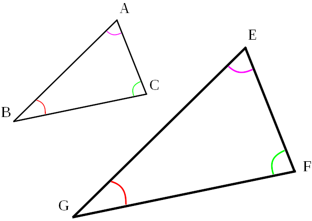{kind=link}
Corresponding angles in similar shapes are marked with the same symbol. For example, $\angle A$ (i.e., angle $A$ ) corresponds to $\angle E$ , and they are equal.
Let's start by writing a rational equation:
$\dfrac{\overline{AC}}{\overline{EF}}=\dfrac{\overline{AB}}{\overline{EG}}$
Now let's plug in the actual numbers:
Now cross-multiply:
Finally, divide both sides of the equation by 10:
$x=23.8 $ inches.
Therefore, $\overline{EG}$ is 23.8 inches long.
2.2.4. Radical Equations
Equations involving radicals are often solved by squaring both sides.
Learning Objective
Solve a radical equation by squaring both sides of the equation and checking for false solutions
Key Points
- When solving equations that involve radicals, begin by asking: is there an $x$ under the square root? The answer to this question will determine the way you approach the problem.
- If there is not an $x$ under the square root—if only numbers are under the radicals—the equation can be solved in much the same way as if it contained no radicals.
- However, if there is an $x$ under a square root, then move everything except that radical to one side, and then square both sides of the equation.
- Squaring both sides can potentially introduce extraneous solutions (i.e., false answers), so it is important to check your answers after solving!
Key Terms
- square
- The second power of a number, value, term, or expression.
- radical
- A root (of a number or quantity).
- extraneous solution
- An answer to an equation that emerges from the process of solving the problem but that is not a valid answer to the original problem.
- root
- A number that, when plugged into an equation, will produce a zero.
When solving equations that involve radicals, begin by asking: is there an $x$ under the square root? The answer to this question will determine the way the problem is approached. If there is not an $x$ under the square root—if only numbers are under the radicals—the problem can be solved much the same way as if it had no radicals.
Solving Radical Equations without Variables Under the Radical Symbol
Example
Solve this equation:
First, isolate the variable on one side of the equation:
Next, since both terms on the left hand side of the equation contain $x$ , factor out the $x$ . (Remember that $\sqrt 2 $ and $\sqrt 3$ are unlike terms and cannot be combined.)
Now divide both sides of the equation by $(\sqrt 2+\sqrt 3)$ to solve for $x$ :
The key thing to note about problems like this is that both sides of the equation do not have to be squared. $2\sqrt{2}$ may look complicated, but it is just a number—it functions in the equation just the way that the number $10$ , or $\frac {1}{3}$ , or $\pi$ would.
Steps to Solve a Radical Equation with a Variable Under the Radical
If there is an $x$ , or variable, under the square root, the problem must be approached differently. In this case, both sides must be squared to get rid of the radical. However, squaring both sides can introduce extraneous solutions (i.e., false answers), so it is important to check the answers after solving. If no answer checks out, then the solution is "no solution."
Example
Solve this equation:
First, isolate the radical:
Now, to undo the radical symbol (square root), square both sides of the equation (recall that squaring a square root removes the radical):
Finally, solve the remaining equation:
Now, let's go back and check our answer:
This is a true statement. Therefore, $x=17$ is a valid solution to the equation $\sqrt{6x-2}-3=7$ .
Solving Radical Equations with False Solutions
Solve this equation:
Isolate the radical symbol (square root):
Now, square both sides of the equation, and solve:
Once we check this result, however, we discover that $\sqrt {100}=-10$ . This is incorrect, because the square root is defined to be only the positive root, $10$ . This means that $10.2$ is an extraneous solution. Because it is the only answer we found, the answer to this problem is "no solution."
This problem demonstrates how important it is to check your solutions whenever you square both sides of an equation.
2.2.5. Equations with Absolute Value
To solve an equation with an absolute value, first isolate the absolute value, and then solve for the positive and negative cases.
Learning Objective
Break down an absolute value equation into two equations to solve for the variable
Key Points
- Absolute values are always positive, since they represent distance.
- An absolute value equation can have one, two, or no solutions.
Key Term
- absolute value
- The magnitude (i.e., non-negative value) of a number without regard to its sign; a number's distance from zero.
Absolute value is one of the simplest functions—and paradoxically, one of the most problematic. At face value, nothing could be simpler: absolute value simply means the distance a number is from zero. The absolute value of $-5$ is $5$ , and the absolute value of $5$ is also $5$ , since both $-5$ and $5$ are $5$ units away from $0$ . Mathematically, this is represented as follows:
$\left | -5 \right |=5$ and $\left| 5 \right| =5$
The following number line also illustrates this definition:

The absolute value of a real number may be thought of as its distance from zero. In this image, for example, $\left | -3 \right |=3$ .
Types of Solutions to Absolute Value Equations
Consider the following three equations. They look very similar—only the number changes—but the solutions are completely different. These three equations demonstrate how absolute value equations can have one, two, or no solutions.
Equation 1
What value(s) will make this equation true?
$x=10$ works, as does $x=-10$ . Therefore our solution is:
Equation 2
Here, neither $x=10$ nor $x=-10$ works. Recall that absolute value is a measure of distance, so it can never be a negative value. This equation therefore has no solution.
Equation 3
$\left| x \right| =0$
What value(s) will make this equation true? $x=0$ is the only solution.
Solving Absolute Value Equations
The following steps describe how to solve an absolute value equation:
- Isolate the absolute value term algebraically.
- Set up two separate equations: For the first, keep the new equation you found in step 1, but remove the absolute value signs; for the second, keep the equation you found in step 1, remove the absolute value signs, and multiply one side by -1.
- Solve the pair of equations.
For example, let's solve the following equation for $x$ :
Step 1
First, algebraically isolate the absolute value by adding 7 to both sides of equation and then dividing both sides by 3:
Step 2
Now, set up two separate equations. The first is the equation we found in Step 1, but with the absolute value signs removed:
The second equation is the one we found in Step 1, with the absolute value signs removed, and with the other side multiplied by -1:
Step 3
Now, solve both equations. For the first:
For the second equation:
Therefore, this problem has two answers:
$x=\dfrac{3}{2}$ and $x=\dfrac{-5}{2}$
2.3. Inequalities
2.3.1. Introduction to Inequalities
Inequalities are used to demonstrate relationships between numbers or expressions.
Learning Objective
Explain what inequalities represent and how they are used
Key Points
- An inequality describes a relationship between two different values.
- The notation $a < b$ means that $a$ is strictly smaller in size than $b$ , while the notation $a > b$ means that $a$ is strictly greater than $b$ .
- The notion $a \leq b$ means that $a$ is less than or equal to $b$ , while the notation $a \geq b$ means that $a$ is greater than or equal to $b$ .
- Inequalities are particularly useful for solving problems involving minimum or maximum possible values.
Key Terms
- inequality
- A statement that of two quantities one is specifically less than or greater than another.
- number line
- A visual representation of the set of real numbers as a series of points.
In mathematics, inequalities are used to compare the relative size of values. They can be used to compare integers, variables, and various other algebraic expressions. A description of different types of inequalities follows.
Strict Inequalities
A strict inequality is a relation that holds between two values when they are different. In the same way that equations use an equals sign, =, to show that two values are equal, inequalities use signs to show that two values are not equal and to describe their relationship. The strict inequality symbols are $<$ and $>$ .
Strict inequalities differ from the notation $a \neq b$ , which means that a is not equal to $b$ . The $\neq$ symbol does not say that one value is greater than the other or even that they can be compared in size.
In the two types of strict inequalities, $a$ is not equal to $b$ . To compare the size of the values, there are two types of relations:
- The notation $a < b$ means that $a$ is less than $b$ .
- The notation $a > b$ means that $a$ is greater than $b$ .
The meaning of these symbols can be easily remembered by noting that the "bigger" side of the inequality symbol (the open side) faces the larger number. The "smaller" side of the symbol (the point) faces the smaller number.
The above relations can be demonstrated on a number line. Recall that the values on a number line increase as you move to the right. The following therefore represents the relation $a$ is less than $b$ :
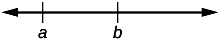{kind=link}
$a$ is to the left of $b$ on this number line.
and the following demonstrates $a$ being greater than $b$ :
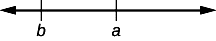{kind=link}
$a$ is to the right of $b$ on this number line.
In general, note that:
- $a < b$ is equivalent to $b > a$ ; for example, $7 < 11$ is equivalent to $11> 7$ .
- $a > b$ is equivalent to $b < a$ ; for example, $6 < 9$ is equivalent to $9 > 6$ .
Other Inequalities
In contrast to strict inequalities, there are two types of inequality relations that are not strict:
- The notation $a \leq b$ means that $a$ is less than or equal to $b$ (or, equivalently, "at most" $b$ ).
- The notation $a \geq b$ means that $a$ is greater than or equal to $b$ (or, equivalently, "at least" $b$ ).
Inequalities with Variables
In addition to showing relationships between integers, inequalities can be used to show relationships between variables and integers.
For example, consider $x > 5$ . This would be read as "$x$ is greater than 5" and indicates that the unknown variable $x$ could be any value greater than 5, though not 5 itself. For a visualization of this, see the number line below:
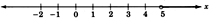{kind=link}
Note that the circle above the number 5 is open, indicating that 5 is not included in possible values of $x$ .
For another example, consider $x \leq 3$ . This would be read as "$x$ is less than or equal to 3" and indicates that the unknown variable $x$ could be 3 or any value less than 3. For a visualization of this, see the number line below:
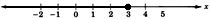{kind=link}
Note that the circle above the number 3 is filled, indicating that 3 is included in possible values of $x$ .
Inequalities are demonstrated by coloring in an arrow over the appropriate range of the number line to indicate the possible values of $x$ . Note that an open circle is used if the inequality is strict (i.e., for inequalities using $>$ or $<$ ), and a filled circle is used if the inequality is not strict (i.e., for inequalities using $\geq$ or $\leq$ ).
Solving Problems with Inequalities
Recall that equations can be used to demonstrate the equality of math expressions involving various operations (for example: $x + 5 = 9$ ). Likewise, inequalities can be used to demonstrate relationships between different expressions.
For example, consider the following inequalities:
Each of these represents the relationship between two different expressions.
One useful application of inequalities such as these is in problems that involve maximum or minimum values.
Example 1
Jared has a boat with a maximum weight limit of 2,500 pounds. He wants to take as many of his friends as possible onto the boat, and he guesses that he and his friends weigh an average of 160 pounds. How many people can ride his boat at once?
This problem can be modeled with the following inequality:
where $n$ is the number of people Jared can take on the boat. To see why this is so, consider the left side of the inequality. It represents the total weight of $n$ people weighing 160 pounds each. The inequality states that the total weight of Jared and his friends should be less than or equal to the maximum weight of 2,500, which is the boat's weight limit.
There are steps that can be followed to solve an inequality such as this one. For now, it is important simply to understand the meaning of such statements and cases in which they might be applicable.
2.3.2. Rules for Solving Inequalities
Arithmetic operations can be used to solve inequalities for all possible values of a variable.
Learning Objective
Solve inequalities using the rules for operating on them
Key Points
- When you're performing algebraic operations on inequalities, it is important to perform the same operation on both sides in order to preserve the truth of the statement.
- If both sides of an inequality are multiplied or divided by the same positive value, the resulting inequality is true.
- If both sides are multiplied or divided by the same negative value, the direction of the inequality changes.
- Inequalities involving variables can be solved to yield all possible values of the variable that make the statement true.
Key Term
- inequality
- A statement that of two quantities one is specifically less than or greater than another.
Operations on Inequalities
When you're performing algebraic operations on inequalities, it is important to conduct precisely the same operation on both sides in order to preserve the truth of the statement.
Each arithmetic operation follows specific rules:
Addition and Subtraction
Any value $c$ may be added to or subtracted from both sides of an inequality. That is to say, for any real numbers $a$ , $b$ , and $c$ :
- If $a \leq b$ , then $a + c \leq b + c$ and $a - c \leq b - c$ .
- If $a \geq b$ , then $a + c \geq b + c$ and $a - c \geq b - c$ .
As long as the same value is added or subtracted from both sides, the resulting inequality remains true.
For example, consider the following inequality:
Let's apply the rules outlined above by subtracting 3 from both sides:
This statement is still true.
Multiplication and Division
The properties that deal with multiplication and division state that, for any real numbers, $a$ , $b$ , and non-zero $c$ :
If $c$ is positive, then multiplying or dividing by $c$ does not change the inequality:
- If $a \geq b$ and $c >0$ , then $ac \geq bc$ and $\dfrac{a}{c} \geq \dfrac{b}{c}$ .
- If $a \leq b$ and $c > 0 $ , then $ac \leq bc$ and $\dfrac{a}{c} \leq \dfrac{b}{c}$ .
If $c$ is negative, then multiplying or dividing by $c$ inverts the inequality:
- If $a \geq b$ and $c <0 $ , then $ac \leq bc$ and $\dfrac{a}{c} \leq \dfrac{b}{c}$ .
- If $a \leq b$ and $c < 0 $ , then $ac \geq bc$ and $\dfrac{a}{c} \geq \dfrac{b}{c}$ .
Take note that multiplying or dividing an inequality by a negative number changes the direction of the inequality. In other words, a greater-than symbol becomes a less-than symbol, and vice versa.
To see these rules applied, consider the following inequality:
Multiplying both sides by 3 yields:
We see that this is a true statement, because 15 is greater than 9.
Now, multiply the same inequality by -3 (remember to change the direction of the symbol because we're multiplying by a negative number):
This statement also holds true. This demonstrates how crucial it is to change the direction of the greater-than or less-than symbol when multiplying or dividing by a negative number.
Solving Inequalities
Solving an inequality that includes a variable gives all of the possible values that the variable can take that make the inequality true. To solve an inequality means to transform it such that a variable is on one side of the symbol and a number or expression on the other side. Often, multiple operations are often required to transform an inequality in this way.
Addition and Subtraction
To see how the rules of addition and subtraction apply to solving inequalities, consider the following:
First, isolate $x$ :
Therefore, $x \leq 25$ is the solution of $x - 8 \leq 17$ . In other words, $x - 8 \leq 17$ is true for any value of $x$ that is less than or equal to 25.
Multiplication and Division
To see how the rules for multiplication and division apply, consider the following inequality:
Dividing both sides by 2 yields:
The statement $x > 4$ is therefore the solution to $2x > 8$ . In other words, $2x > 8$ is true for any value of $x$ greater than 4.
Now, consider another inequality:
Because of the negative sign involved, we must multiply by a negative number to solve for $y$ . This means that we must also change the direction of the symbol:
Therefore, the solution to $-\frac{y}{3} \leq 7$ is $y \geq -21$ . The given statement is therefore true for any value of $y$ greater than or equal to $-21$ .
Example
Solve the following inequality:
First, add 17 to both sides:
Next, divide both sides by 3:
Special Considerations
Note that it would become problematic if we tried to multiply or divide both sides of an inequality by an unknown variable. If any variable $x$ is unknown, we cannot identify whether it has a positive or negative value. Because the rules for multiplying or dividing positive and negative numbers differ, we cannot follow this same rule when multiplying or dividing inequalities by variables. Variables can, however, be added or subtracted from both sides of an inequality.
2.3.3. Compound Inequalities
A compound inequality involves three expressions, not two, but can also be solved to find the possible values for a variable.
Learning Objective
Solve a compound inequality by balancing all three components of the inequality
Key Points
- A compound inequality is of the following form: $a < x < b$ .
- There are two statements in a compound inequality. The first statement is $a < x$ . The next statement is $x < b$ . When we read this statement, we say "$a$ is less than $x$ , and $x$ is less than $b$ ."
- An example of a compound inequality is: $4 < x < 9$ . In other words, $x$ is some number strictly between 4 and 9.
- A compound inequality may contain an expression, such as $1 < x - 6 < 8$ ; such inequalities can be solved for all possible values of $x$ .
Key Terms
- inequality
- A statement that of two quantities one is specifically less than or greater than another.
- compound inequality
- An inequality that is made up of two other inequalities, in the form
$a < x < b$ .
Defining Compound Inequalities
A compound inequality is of the following form:
There are actually two statements here. The first statement is $a < x$ . The next statement is $x < b$ . This statement is therefore read as "$a$ is less than $x$ , and $x$ is less than $b$ ."
The compound inequality $a < x < b$ indicates "betweenness"—the number $x$ is between the numbers $a$ and $b$ . Without changing the meaning, the statement $a<x$ can also be read as $x>a$ . Therefore, the form $a < x < b$ can also be read as "$x$ is greater than $a$ , and at the same time is less than $b$ ."
Consider $4 < x < 9$ . This states that $x$ is some number strictly between 4 and 9. For a visualization of this inequality, refer to the number line below. The numbers 4 and 9 are not included, so we place open circles on these points.
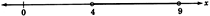{kind=link}
The above inequality on the number line.
Similarly, consider $-2 < z < 0$ . In this case, $z$ is some number strictly between -2 and 0. Again, because the numbers -2 and 0 are not included, we place open circles on those points.
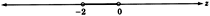{kind=link}
The above inequality on the number line.
$$ Solving Compound Inequalities
Now consider $1 < x + 6 < 8$ . The expression $x + 6$ represents some number strictly between 1 and 8. However, the meaning of this is difficult to visualize—what does it mean to say that an expression, rather than a number, lies between two points? Not to worry—we can still find all possible values of not only the expression, but the variable $x$ itself.
The statement $1 < x + 6 < 8$ says that the quantity $x + 6$ is between 1 and 8, a statement that will be true for only certain values of $x$ .
To solve for possible values of $x$ , we need to get $x$ by itself:
Therefore, we find that if $x$ is any number strictly between -5 and 2, the statement $1 < x + 6 < 8$ will be true.
Example 1
Solve $-3 < \dfrac{-2x-7}{5} < 7$ .
Multiply each part to remove the denominator from the middle expression:
Isolate $x$ in the middle of the inequality:
Now divide each part by -2 (and remember to change the direction of the inequality symbol!):
Finally, it is customary (though not necessary) to write the inequality so that the inequality arrows point to the left (i.e., so that the numbers proceed from smallest to largest):
2.3.4. Inequalities with Absolute Value
Inequalities with absolute values can be solved by thinking about absolute value as a number's distance from 0 on the number line.
Learning Objective
Solve inequalities with absolute value
Key Points
- Problems involving absolute values and inequalities can be approached in at least two ways: through trial and error, or by thinking of absolute value as representing distance from 0 and then finding the values that satisfy that condition.
- When solving inequalities that involve an an absolute value within a larger expression (for example, $\left|2x\right| + 3>8$ ), it is necessary to algebraically isolate the absolute value and then algebraically solve for the variable.
Key Terms
- absolute value
- The magnitude of a real number without regard to its sign; formally, -1 times a number if the number is negative, and a number unmodified if it is zero or positive.
- inequality
- A statement that of two quantities one is specifically less than or greater than another.
- number line
- A line that graphically represents the real numbers as a series of points whose distance from an origin is proportional to their value.
Consider the following inequality that includes an absolute value:
Knowing that the solution to $\left|x\right|=10$ is $x = 10$ , many students answer this question $x < 10$ . However, this is wrong.
Here are two different, but both perfectly correct, ways to look at this problem.
Trial and Error
What numbers work? That is to say, for what numbers is $\left|x\right| < 10$ a true statement? Let's test some out.
4 works. -4 does too. 13 doesn't work. How about -13? No: If $x = -13$ , then $\left|x\right| = 13$ , which is not less than 10.
By playing with numbers in this way, you should be able to convince yourself that the numbers that work must be somewhere between -10 and 10. This is one way to approach finding the answer.
Absolute Value as Distance
The other way is to think of absolute value as representing distance from 0. $\left|5\right|$ and $\left|-5\right|$ are both 5 because both numbers are 5 away from 0.
In this case, $\left|x\right| < 10$ means "the distance between $x$ and 0 is less than 10." In other words, you are within 10 units of zero in either direction. Once again, we conclude that the answer must be between -10 and 10.
This answer can be visualized on the number line as shown below, in which all numbers whose absolute value is less than 10 are highlighted.
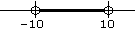{kind=link}
All numbers whose absolute value is less than 10.
It is not necessary to use both of these methods; use whichever method is easier for you to understand.
Solving Inequalities with Absolute Value
More complicated absolute value problems should be approached in the same way as equations with absolute values: algebraically isolate the absolute value, and then algebraically solve for $x$ .
For example, consider the following inequality:
$\left|2x\right| + 3>8$
It is difficult to immediately visualize the meaning of this absolute value, let alone the value of $x$ itself. It is necessary to first isolate the inequality:
Now think about the number line. In those terms, this statement means that the expression $2x$ must be more than 8 places away from 0. Therefore, it must be either greater than 8 or less than -8. Expressing this with inequalities, we have:
$2x>8$ or $2x < -8$
We now have 2 separate inequalities. If each one is separately solved for $x$ , we will see the full range of possible values of $x$ . Consider them independently. First:
Second:
We now have two ranges of solutions to the original absolute value inequality:
$x > 4$ and $x < -4$
This can also be visually displayed on a number line:
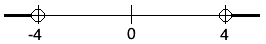{kind=link}
The solution is any value of $x$ less than -4 or greater than 4.
Example
Solve the following inequality:
First, algebraically isolate the absolute value:
Now think: the absolute value of the expression is greater than –3. What could the expression be equal to? 2 works. –2 also works. And 0. And 7. And –10. Absolute values are always positive, so the absolute value of anything is greater than –3! All numbers therefore work.
2.4. Graphing and Equations of Two Variables
2.4.1. The Cartesian System
The Cartesian coordinate system is used to visualize points on a graph by showing the points' distances from two axes.
Learning Objective
Explain how to plot points in the Cartesian plane and what it means to do so
Key Points
- The Cartesian coordinate system is a 2-dimensional plane with a horizontal axis, known as the $x$ -axis, and a vertical axis, known as the $y$ -axis.
- A Cartesian coordinate system specifies each point uniquely in a plane with a pair of numerical coordinates, each of which is the signed distance from the point to one of the two axes.
- The numerical coordinates of a point are represented by an ordered pair $(x,y)$ , where the $x$ -coordinate is the point's distance from the $y$ -axis, and the $y$ -coordinate is the distance from the $x$ -axis.
- The Cartesian coordinate system is broken into four quadrants, labeled I, II, III, and IV, starting from the upper right hand corner and moving counterclockwise.
- The independent variable is found on the $x$ -axis and consists of the input values. The dependent variable is found on the $y$ -axis and consists of the output values.
Key Terms
- dependent variable
- An arbitrary output; on the Cartesian plane, the value of
$y$ . - quadrant
- One of the four quarters of the Cartesian plane bounded by the
$x$ -axis and$y$ -axis. - y-axis
- The axis on a graph that is usually drawn from bottom to top, with values increasing farther up.
- ordered pair
- A set containing exactly two elements in a fixed order, used to represent a point in a Cartesian coordinate system. Notation:
$(x,y)$ . - x-axis
- The axis on a graph that is usually drawn from left to right, with values increasing to the right.
- independent variable
- An arbitrary input; on the Cartesian plane, the value of
$x$ .
Example
Named for "the father of analytic geometry," 17th-century French mathematician René Descartes, the Cartesian coordinate system is a 2-dimensional plane with a horizontal axis and a vertical axis. Both axes extend to infinity, and arrows are used to indicate infinite length. The horizontal axis is known as the $x$ -axis, and the vertical axis is known as the $y$ -axis. The point where the axes intersect is known as the origin.
A Cartesian coordinate system is used to graph points. Points are specified uniquely in the Cartesian plane by a pair of numerical coordinates, which are the signed distances from the point to the two axes. Each point can be represented by an ordered pair $(x,y) $ , where the $x$ -coordinate is the point's distance from the $y$ -axis and the $y$ -coordinate is the distance from the $x$ -axis. The origin where the two axes meet is therefore $(0,0)$ . On the $x$ -axis, numbers increase toward the right and decrease toward the left; on the $y$ -axis, numbers increase going upward and decrease going downward.
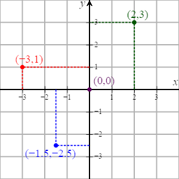{kind=link}
The Cartesian coordinate system with 4 points plotted, including the origin, at $(0,0)$ .
Plotting Points
To plot the point $(2,3)$ , for example, you start at the origin (where the two axes intersect). Then, move three units to the right and two units up.
The point $(-3,1)$ is found by moving three units to the left of the origin and one unit up.
The non-integer coordinates $(-1.5,-2.5)$ lie between -1 and -2 on the $x$ -axis and between -2 and -3 on the $y$ -axis. Therefore, you move one and a half units left and two and a half units down.
Independent and Dependent Variables
A Cartesian plane is particularly useful for plotting a series of points that show a relationship between two variables.
For example, there is a relationship between the number of cars a car wash cleans and the money the business makes (its revenue). The revenue, or output, depends upon the number of cars, or input, that they wash. Therefore, the revenue is the dependent variable ($y$ ), and the number of cars is the independent variable ($x$ ). The revenue is plotted on the $y$ -axis, and the number of cars washed is plotted on the $x$ -axis.
Quadrants
The Cartesian coordinate system is broken into four quadrants by the two axes. These quadrants are labeled I, II, III, and IV, starting from the upper right and continuing counter-clockwise, as pictured below.
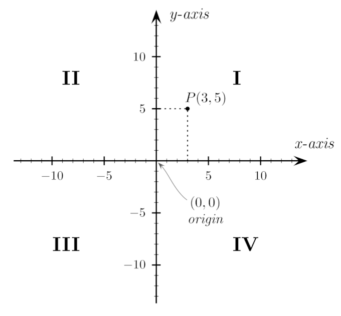{kind=link}
The four quadrants of theCartesian coordinate system. The arrows on the axes indicate that they extend infinitely in their respective directions.
Some basic rules about these quadrants can be helpful for quickly plotting points:
- Quadrant I: Points have positive $x$ and $y$ coordinates, $(x,y)$ .
- Quadrant II: Points have negative $x$ and positive $y$ coordinates, $(-x,y)$ .
- Quadrant III: Points have negative $x$ and $y$ coordinates, $(-x,-y)$ .
- Quadrant IV: Points have positive $x$ and negative $y$ coordinates, $(x,-y)$ .
- Points that have a value of 0 for either coordinate lie on the axes themselves and are not considered to be in any of the quadrants (e.g., $(4,0)$ , $(0,-2)$ ).
2.4.2. Equations in Two Variables
Equations with two unknowns represent a relationship between two variables and have a series of solutions.
Learning Objective
Explain what an equation in two variables represents
Key Points
- An equation in two variables has a series of solutions that will satisfy the equation for both variables.
- Each solution to an equation in two variables is an ordered pair and can be written in the form $(x, y)$ .
Key Terms
- Cartesian coordinates
- The coordinates of a point measured from an origin along a horizontal axis from left to right (the
$x$ -axis) and along a vertical axis from bottom to top (the$y$ -axis). - ordered pair
- A set containing exactly two elements in a fixed order, used to represent a point in a Cartesian coordinate system. Notation:
$(x, y)$ .
Equations with two unknowns represent a relationship between two variables. Equations in two variables often express a relationship between the variables $x$ and $y$ , which correspond to Cartesian coordinates.
Equations in two variables have not one solution but a series of solutions that will satisfy the equation for both variables. Each solution is an ordered pair and can be written in the form $(x, y)$ .
Solving Equations in Two Variables
For a given equation in two variables, choosing a value for one variable dictates what the value of the other variable will be. In other words, if a value for one variable is provided, then a solution can be found that satisfies the equation. This is accomplished by substituting the given value in for that variable, and solving for the value of the other.
Example 1
Consider the following equation:
This is an equation in two variables that has an infinite number of solutions. For any $x$ -value, the corresponding $y$ -value will be twice its value.
For example, $(1, 2)$ is a solution to the equation. This can be verified by plugging in the $x$ - and $y$ -values:
Another solution is $(30, 60)$ , because $(60) = 2(30)$ . There are thus an infinite number of ordered pairs that satisfy the equation.$$
Example 2
Now consider the following equation:
Is the point $(3, 10)$ a solution to this equation?
Note that the ordered pair $(3, 10)$ tells us that $x = 3$ and $y = 10$ . To evaluate whether this is a solution to the equation, substitute these values in for the variables as follows:
This is a true statement, so $(3, 10)$ is indeed a solution to this equation.
Example 3
Solve the equation $y = 4x - 7$ for the value $x=3$ .
The solution to the given equation would take the form $(x, y)$ , and we are given the $x$ -value. The $x$ -value can be substituted into the equation to find the value of $y$ at this point:
For the given equation, $y = 5$ when $x = 3$ . Therefore, the solution is $(3, 5)$ .
Example 4
Solve $x + 2y = 8$ for $x = 4$ .
As in the above example, the $x$ -value is provided, and we need to find the corresponding $y$ -value. We can first rewrite the equation in terms of $y$ :
Now substitute $x = 4$ into the equation, and solve for $y$ :
The solution is $(4, 2)$ .
2.4.3. Graphing Equations
Equations and their relationships can be visualized in many different types of graphs.
Learning Objective
Practice graphing equations in the Cartesian plane
Key Points
- Graphs are important tools for visualizing equations.
- To graph an equation, choose a value for either $x$ or $y$ , solve for the variable you didn't choose, plot the ordered pair as a point on the Cartesian plane, and repeat, until you have enough points plotted that you can connect them to visualize the graph.
Key Terms
- point
- An entity that has a location in space or on a plane, but has no extent.
- graph
- A diagram displaying data; in particular, one showing the relationship between two or more quantities, measurements or numbers.
Now that we know what equations are, how do we go about visualizing them? For an equation with two variables, $x$ and $y$ , we need a graph with two axes: an $x$ -axis and a $y$ -axis. We will use the Cartesian plane, in which the $x$ -axis is a horizontal line and the $y$ -axis is a vertical line. Where the two axes cross is called the origin.
Graphing an Equation in Two Variables
Let's start with the following equation:
We'll start by choosing a few $x$ -values, plugging them into this equation, and solving for the unknown variable $y$ . After creating a few $x$ and $y$ ordered pairs, we will plot them on the Cartesian plane and connect the points.
For the three values for $x$ , let's choose a negative number, zero, and a positive number so we include points on both sides of the $y$ -axis:
- If $x=-2$ , then $y=-7$ . We plot the point $(-2,-7)$ .
- If $x=0$ , then $y=-3$ . We plot the point $(0,-3)$ .
- If $x=2$ , then $y=1$ . We plot the point $(2,1)$ .
Now we can connect the dots to visualize the graph of the equation:
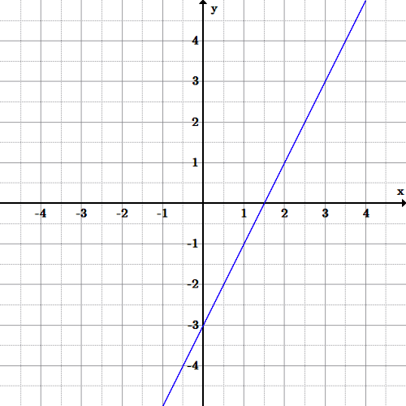{kind=link}
The equation is the graph of a line through the three points found above. The line continues on to infinity in each direction, since there is an infinite series of ordered pairs of solutions.
Graphing Non-Linear Equations
Example 1
What graph will the following equation make?
Let's figure it out by choosing some points to plot.
First, let's try $x=0$ :
So we plot $(0,10)$ and $(0,-10)$ .
Note that we don't always have to choose values for $x$ . For example, let's now try setting $y=0$ .
Through the same arithmetic as above, we get the ordered pairs $(10,0)$ and $(-10,0)$ . Plot these as well.
We still don't have enough points to really see what's going on, so let's choose some more. Let's try solving for $y$ when $x=6$ :
So that's two new points: $(6,8)$ and $(6,-8)$ . We get similar results with $x=-6$ , to get $(-6,8)$ and $(-6,-8)$ .
Now you can begin seeing that we're drawing a circle with a radius of 10:
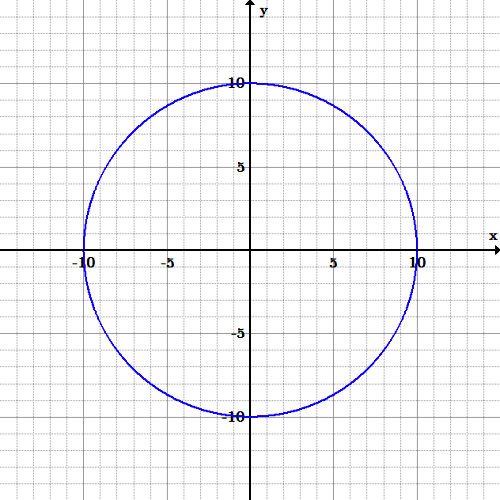{kind=link}
This is a graph of a circle with radius 10 and center at the origin.
Example 2
Let's try another example. This time let's use the following equation:
Again, let's plug in some numbers and begin plotting points.
Input values (for the independent variable $x$ ) from -2 to 2 can be used to obtain output values (the dependent variable $y$ ) from 5 to 9. Connect these points with the best curve you can, and you'll discover you've drawn a parabola.
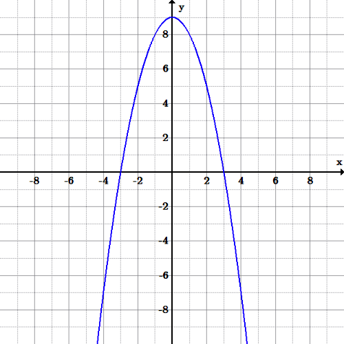{kind=link}
This graph is of a parabola (a U-shaped open curve symmetric about a line). Parabolas can open up or down, right or left; they also have a maximum or minimum value.
2.4.4. Graphs of Equations as Graphs of Solutions
A solution to an equation can be plotted on graphs to better visualize how the equation, or function, behaves.
Learning Objective
Recognize that graphing an equation involves graphing solutions to it
Key Points
- To solve an equation is to find what values (numbers, functions, sets, etc.) fulfill a condition stated in the form of an equation.
- Once an equation has been graphed, solutions to any particular $x$ or $y$ value can be readily found by simply looking at the graph.
- To solve for a variable of an equation, you must use algebraic manipulations to get the variable by itself on one side of the equation (typically the left).
Key Terms
- expression
- An arrangement of symbols denoting values, operations performed on them, and grouping symbols (e.g.,
$(2x+4)$ ). - equation
- An assertion that two expressions are equivalent (e.g.,
$x=5$ ). - graph
- A diagram displaying data, generally representing the relationship between two or more quantities.
In mathematics, to solve an equation is to find what values (numbers, functions, sets, etc.) fulfill a condition stated in the form of an equation (two expressions related by equality). Each of the expressions contain one or more unknowns.
What is the graphical difference between equations with one variable and equations with two variables?
Graphs of Linear Equations with One Variable
A linear equation in one variable can be written in the form $ax+b=0, $ where $a$ and $b$ are real numbers and $a\neq 0$ . In an equation where $x$ is a real number, the graph is the collection of all ordered pairs with any value of $y$ paired with that real number for $x$ .
For example, to graph the equation $x-1=0, $ a few of the ordered pairs would include:
These can also be found by solving the equation of the graph for $x$ , which yields $ x = 1$ . This means that the $y$ -values of the points don't matter as long as their $x$ -values are 1. The graph is therefore a vertical line through those points, since all points have the same $x$ -value.
The same is true for an equation written as $ay+b=0$ , or $y=-4$ , for example. The graph would be a horizontal line through points that all have $y$ -values of -4.
Therefore, when the equation is $y=C, $ where $C$ is a constant real number, the graph is a horizontal line. Similarly, if the equation is $x=C,$ then the graph is a vertical line.
Graphs of Equations with Two Variables
The graph of a cubic polynomial has an equation like $y=x^3-9x$ . Its equation has two variables, $x$ and $y$ , and the equation is solved for $y$ .
Plot specific points by substituting chosen $x$ -values into the equation, and solve for the corresponding $y$ value, and then graph.
Let's choose values for $x$ from -2 to 2. When $x=-2$ , we have:
Therefore, $(-2,10)$ is a point on this curve (i.e., the graph of the equation).
After substituting the rest of the values, the following ordered pairs are found:
After graphing the ordered pairs and connecting the points, we see that the set of (infinite) points follows this pattern:
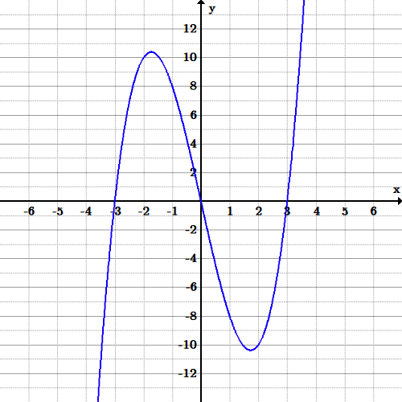{kind=link}
Since the exponent of $x$ is a 3, it means that this equation is a 3rd-degree polynomial, called a cubic polynomial.
2.4.5. Graphing Inequalities
The solutions to inequalities can be graphed by drawing a boundary line to divide the coordinate plane in two and shading in one of those parts.
Learning Objective
Practice graphing inequalities by shading in the correct section of the plane
Key Points
- All solutions to a given inequality are located in one half-plane and can be graphed.
- To graph an inequality, first treat it as a linear equation and graph the corresponding line. Then, shade the correct half-plane to represent all the possible solutions to the inequality.
- If an inequality uses a $\leq$ or $\geq$ symbol, the boundary line should be drawn solid, meaning that solutions include points on the line itself.
- If an inequality uses a $<$ or $>$ symbol, the boundary line should be drawn dotted, meaning that solutions do not include any points on the line.
Key Terms
- boundary line
- The straight line in the graph of an inequality that defines the half-plane containing the solutions to the inequality.
- half-plane
- One of the two parts of the coordinate plane created when a line is drawn.
In our study of linear equations in two variables, we observed that all the solutions to an equation—and only those solutions— were located on the graph of that equation. We now wish to determine the location of the solutions to linear inequalities in two variables.
Linear inequalities in two variables have one of the following forms:
Recall that for a linear equation in two variables, ordered pairs that produce true statements when substituted into the equation are called "solutions" to that equation.
We can make a similar statement regarding inequalities in two variables. We say that an inequality in two variables has a solution when a pair of values has been found such that substituting these values into the inequality results in a true statement.
As with equations, solutions to linear inequalities have particular locations in the coordinate plane. For a linear equality in two variables, all solutions are located in one entire half-plane. A straight line drawn through the plane divides the plane into two half-planes, as shown in the diagram below. The straight line shown is called a boundary line.
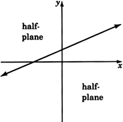{kind=link}
The boundary line shown above divides the coordinate plane into two half-planes.
For example, consider the following inequality:
$2x + 3y \leq 6 $
The graph below demonstrates all solutions to this inequality, which fall on the boundary line and in the shaded half-plane.
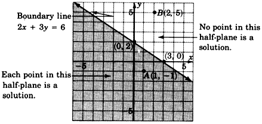{kind=link}
All points lying on the boundary line and in the shaded half-plane are solutions to this inequality.
Now consider the following inequality:
The graph below shows the solutions to this inequality: the shaded area above the boundary line. Note that because the inequality uses the $>$ symbol, rather than the $\geq$ symbol, the inequality is strict: points on the boundary line are not solutions, so the line is drawn dotted.
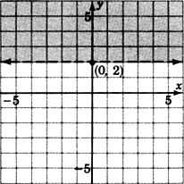{kind=link}
All points in the shaded half-plane above the line are solutions to this inequality.
The method of graphing linear inequalities in two variables is as follows.
First, consider the inequality as an equation (i.e., replace the inequality sign with an equals sign) and graph that equation. This is called the boundary line. Note:
- If the inequality is $\leq$ or $\geq$ , draw the boundary line solid. This means that points on the line are solutions and are part of the graph.
- If the inequality is $<$ or $>$ , draw the boundary line dotted. This means that points on the line are not solutions and are not part of the graph.
Determine which half-plane to shade by choosing a test point.
- If, when substituted, the test point yields a true statement, shade the half-plane containing it.
- If, when substituted, the test point yields a false statement, shade the half-plane on the opposite side of the boundary line.
Example 1
Graph the following inequality:
First, we need to graph the boundary line. To do so, consider the inequality as an equation:
Recall that, in order to graph an equation, we can substitute a value for one variable and solve for the other. The resulting ordered pair will be one solution to the equation. So, let's substitute $x = 0 $ to find one solution:
Now let's substitute $y=0$ to find another solution:
Now we can graph the two known solutions, $(0, 2)$ and $(-\frac{4}{3}, 0)$ . The inequality is $\geq$ , so we know we need to draw the line solid. This gives the boundary line below:
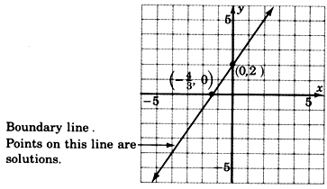{kind=link}
Graph of the boundary line, drawn using two ordered-pair solutions.
Next, choose a test point to figure out which half-plane we need to shade in. The easiest test point is $(0, 0)$ . Let's substitute $(0, 0)$ into the original inequality:
This a true statement, so shade in the half-plane containing $(0, 0). $
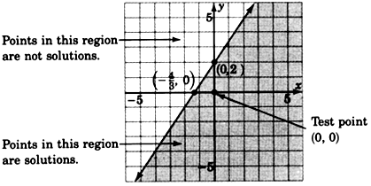{kind=link}
Graph showing all possible solutions of the given inequality. The solutions lie in the shaded region, including the boundary line.